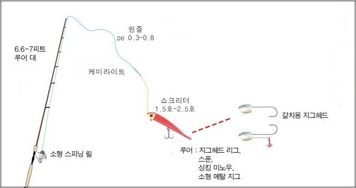

<link href="//maxcdn.bootstrapcdn.com/bootstrap/3.3.0/css/bootstrap.min.css" rel="stylesheet" id="bootstrap-css">
<link href="과제.css" rel="stylesheet" id="bootstrap-css">
<script src="//maxcdn.bootstrapcdn.com/bootstrap/3.3.0/js/bootstrap.min.js"></script>
<script src="//code.jquery.com/jquery-1.11.1.min.js"></script>
<!------ Include the above in your HEAD tag ---------->

 <!-- Static navbar -->
    <nav class="navbar navbar-inverse  navbar-static-top">
      <div class="container">
        <div class="navbar-header">
          <a class="navbar-brand" href="index.html">낚시왕Blog</a>
        </div>
        <div id="navbar" class="navbar-collapse collapse">
          <ul class="nav navbar-nav">
            <li class="active"></li>
            <li><a href="찌낚시.html">찌낚시</a></li>
            <li><a href="루어.html">루어</a></li>
            <li><a href="원투.html">원투</a></li>
            <li><a href="미끼와 종류.html">미끼와 종류</a></li>
          </ul>

          
          <ul class="nav navbar-nav navbar-right">
            <li><a href="회원가입.html">회원가입</a></li>
            <li class="active"><a href="로그인.html">로그인<span class="sr-only">(current)</span></a></li>

          </ul>
        </div><!--/.nav-collapse -->
      </div>
    </nav>

<section class="banner-section">
</section>
<section class="post-content-section">
    <div class="container">

        <div class="row">
            <div class="col-lg-12 col-md-12 col-sm-12 post-title-block">
               
                <h1 class="text-center">루어낚시에 대해서</h1><br>
                
            </div>

<div class="col-lg-9 col-md-9 col-sm-12">
<p class="lead"> 
<h3>
  루어낚시의 기본 채비에 대해 알려드리겠습니다.
</h3>
</p>
                 

     
<p></p>
<blockquote>
  <p>
    루어낚시란 인조미끼를 이용, 공격성이 강한 어종만을 대상으로 할 수 있는 낚시이며 유인동작을 통해 고기를 잡을 수 있는 매우 활발하고 공격적인 낚시방법입니다. 요즘 루어낚시가 갈 수록 인기가 있고 바다낚시를 즐기는 연령층이 갈 수록 젊어지는것엔 이 루어낚시가 한몫하고 있는데요, 그만큼 루어낚시는 기다리는 낚시가 아닌 던지고 감고를 반복해야하는 엄청나게 바쁜 낚시형태랍니다. <br><br>

    루어낚시의 장점 <br>
 - 포인트 제약이 없다. (방파제, 방조제, 갯바위, 선상 어디든 가능)<br>
 - 채비가 단순하고 낚시짐이 많지 않아 옮겨다니면서 낚시가 가능하기에 기동성이 좋다.<br>
 - 장비가 가벼워 큰 고기가 아니더라도 당찬 손맛을 느낄 수 있다.<br>
 - 기다리는 지루한 낚시가 아닌 공격적이고 활동적인 낚시라는데 매력이 있다.<br>
 - 남녀노소 누구나 쉽게 즐길 수 있다.(특히 젊은층에게 인기)<br>
 - 인조미끼를 사용하므로 생미끼에 대한 부담감이 전혀 없다.<br><br>

 루어 찌낚시의 단점 <br>
 - 밑걸림이 잦고 채비손실에 대한 부담감이 있다. <br>
 - 유인동작에 대한 여러 테크닉을 요구한다.<br>
 - 육지보다 선상에서 해야 조과가 월등히 높다.<br>
 - 체력소모가 크다.<br>
 - 잡을 수 있는 어종은 공격성이 있는 어종으로 제한된다.<br>
  </p>
  
</blockquote>

<!-- Google tag (gtag.js) -->
<script async src="https://www.googletagmanager.com/gtag/js?id=G-MY1RNE63FZ"></script>
<script>
  window.dataLayer = window.dataLayer || [];
  function gtag(){dataLayer.push(arguments);}
  gtag('js', new Date());

  gtag('config', 'G-MY1RNE63FZ');
</script>

<div id="disqus_thread"></div>
<script>
    /**
    *  RECOMMENDED CONFIGURATION VARIABLES: EDIT AND UNCOMMENT THE SECTION BELOW TO INSERT DYNAMIC VALUES FROM YOUR PLATFORM OR CMS.
    *  LEARN WHY DEFINING THESE VARIABLES IS IMPORTANT: https://disqus.com/admin/universalcode/#configuration-variables    */
    /*
    var disqus_config = function () {
    this.page.url = PAGE_URL;  // Replace PAGE_URL with your page's canonical URL variable
    this.page.identifier = PAGE_IDENTIFIER; // Replace PAGE_IDENTIFIER with your page's unique identifier variable
    };
    */
    (function() { // DON'T EDIT BELOW THIS LINE
    var d = document, s = d.createElement('script');
    s.src = 'https://eldzz96.disqus.com/embed.js';
    s.setAttribute('data-timestamp', +new Date());
    (d.head || d.body).appendChild(s);
    })();
</script>
<noscript>Please enable JavaScript to view the <a href="https://disqus.com/?ref_noscript">comments powered by Disqus.</a></noscript>

<br>

             </div>
            <div class="col-lg-3  col-md-3 col-sm-12">
          
                <div class="list-group">
                    <a class="list-group-item active list-group-item-danger" href="https://slds2.tistory.com/3585?category=600117" target='_blank'><h4 class="list-group-item-heading">우리나라 수산자원의 금어기 및 포획금지체장</h4> <p class="list-group-item-text">꼭 확인하여 우리나라 수산자원을 지킵시다.</p> </a>
                    <a class="list-group-item list-group-item-success" href="https://slds2.tistory.com/1255?category=600117" target='_blank'><h4 class="list-group-item-heading">짜릿한 손맛, 낚시를 시작하다</h4> <p class="list-group-item-text">내게 맞는 낚시는 무엇일까?</p> </a>
                    <a class="list-group-item list-group-item-info" href="https://slds2.tistory.com/309?category=600117" target='_blank'> <h4 class="list-group-item-heading">갯바위에서 죽어가는 생명</h4> <p class="list-group-item-text">갯바위에 버려진 각종 오물과 쓰레기들에 심지어는 대변까지..</p> </a> 
                </div>

                <div class="well">
                    <div class="media"> <div class="media-left"> <a href="https://www.nongmin.com/news/NEWS/FLD/NWS/358749/view" target='_blank'>  </a> </div> <div class="media-body"> <h4 class="media-heading">감성돔 10만마리, 통영 앞바다로…</h4> 경남도, 수산자원 조성 박차.</div> </div>
                    <div class="media"> <div class="media-left"> <a href="https://news.sbs.co.kr/news/endPage.do?news_id=N1006902134&plink=ORI&cooper=NAVER" target='_blank'>  </a> </div> <div class="media-body"> <h4 class="media-heading">갯바위 낚시객 덮친 '7m 파도'...</h4> 구조대원도 휩쓸려 다쳐.</div> </div>
                    <div class="media"> <div class="media-left"> <a href="https://www.ytn.co.kr/_ln/0115_202209290512125215" target='_blank'>  </a> </div> <div class="media-body"> <h4 class="media-heading">끊이지 않는 방파제 추락사고...</h4> 안전 불감증 여전</div> </div>
                </div>
            </div>
        </div>
      

    </div> <!-- /container -->
</section>


      